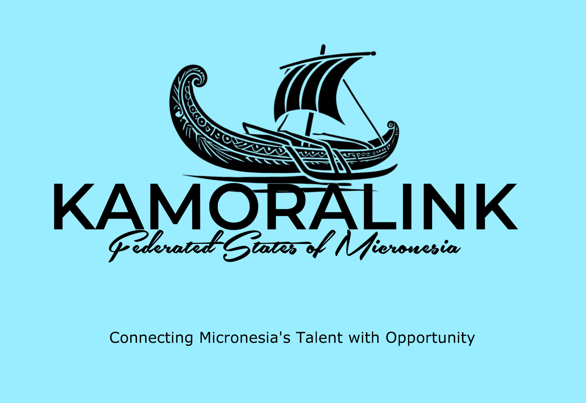

Purpose
The purpose of KamoraLink Lite is to simplify the job application process for both job seekers and employers in the Federated States of Micronesia by providing a digital platform that consolidates job opportunities and applications in one place. By reducing the need for hard copy submissions, KamoraLink Lite makes it easier, faster, and more efficient for job seekers to apply for positions and for employers to manage their hiring process, ultimately bridging the gap between both parties and promoting better access to employment opportunities.
Target Audience
KamoraLink Lite is designed for job seekers in the Federated States of Micronesia who are looking for an easier and faster way to apply for jobs without the need for paper applications. The platform also targets employers in Micronesia, including small businesses, government agencies, and organizations, who need a streamlined way to receive and manage digital job applications. KamoraLink Lite’s goal is to cater to both groups by providing a convenient and efficient solution to the challenges of traditional job application processes.
Scenarios
Questions
For Job Seekers: "How can KamoraLink Lite make your job search easier by allowing you to apply for jobs online instead of submitting hard copy applications?"
For Employers:"How can KamoraLink Lite help you streamline your hiring process by bringing all job applications into one digital platform?"
Answers
For Job Seekers: Ioanis, a job seeker in Micronesia, has been submitting paper applications for years. With KamoraLink Lite, he can now browse job listings, apply online, and track his applications all in one place, saving time and effort. The convenience of digital applications helps him apply to more jobs faster, increasing his chances of landing a job.
For Employers: Shrue, a hiring manager in Pohnpei, is tired of sorting through piles of paper applications. By using KamoraLink Lite, she can view all digital job applications in one place, making it easier to review candidates, respond quickly, and keep her hiring process organized. This efficiency saves her time and helps her find the right candidates faster.
Hero Image
Typography
Ubuntu
font-family: "Ubuntu", sans-serif;
Playfair Display
font-family: "Playfair Display", serif;
Color Schema
#1D2F6F
#000000
#FFFFFF
#317B22
#279AF1